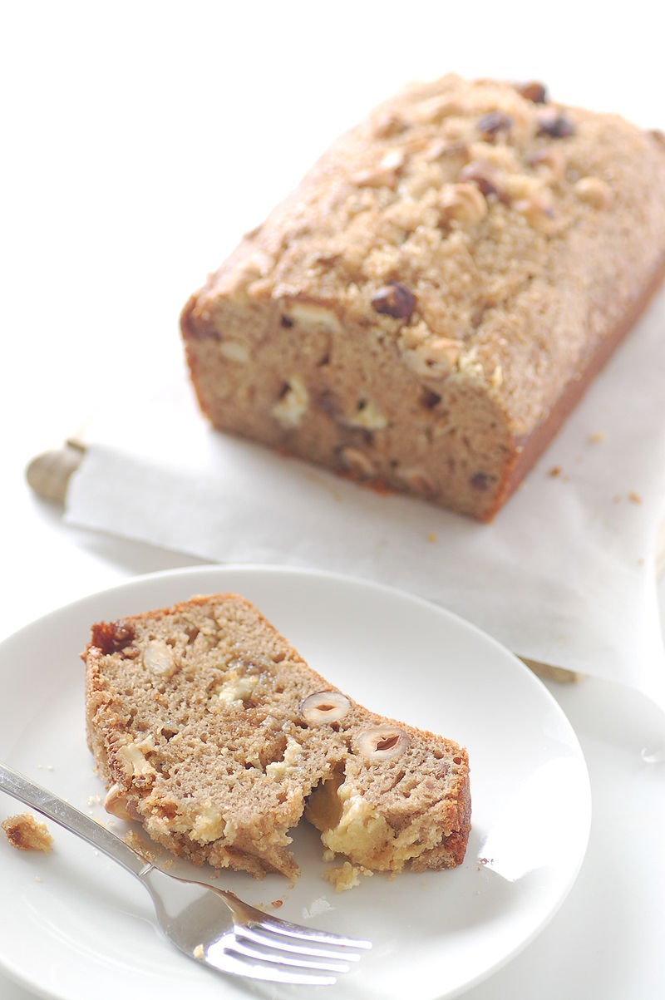

Banana Bread

Description
This is an easy to make recipe that I inherited from my great-great grandmother Gertrude on her death bed.
This is all she ever ate. Seriously. For 132 years, she only ate banana bread.
Regardless, this will be fun for the whole family. I hope you enjoy my recipe.
Ingredients
- 2 cups all-purpose flour
- 1 teaspoon baking soda
- 1/4 teaspoon baking soda
- 1/2 cup butter
- 3/4 cup brown sugar
- 2 eggs, beaten
- 2 1/3 cups mashed overripe bananas
Steps
- Preheat oven to 350 degrees F (175 degrees C). Lightly grease a 9x5 inch loaf pan.
- In a large bowl, combine flour, baking soda and salt. In a separate bowl, cream together butter and brown sugar. Stir in eggs and mashed bananas until well blended. Stir banana mixture into flour mixture; stir just to moisten. Pour batter into prepared loaf pan.
- Bake in preheated oven for 60 to 65 minutes, until a toothpick inserted into center of the loaf comes out clean. Let bread cool in pan for 10 minutes, then turn out onto a wire rack.